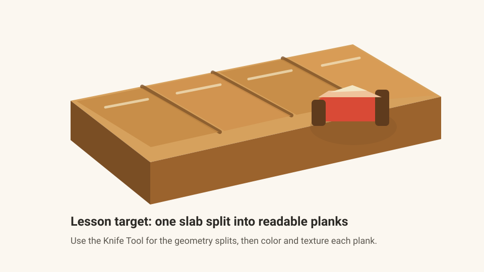

Day 9 — Week 2: Modeling polish
09Prep counter — Knife Tool
Yesterday's new move was Inflate: polish the shape without adding parts. Today you learn the Knife Tool: split one cube into editable pieces, then turn a plain slab into a wooden prep counter made from separate planks.
One wooden prep counter tile: a single countertop slab cut into planks with the Knife Tool, then colored and painted so it reads like a game-ready kitchen surface.
Warm up — 30-second recall
Answer first, then open the cards.
What problem does Inflate solve?
Why does a shared palette matter?
What should you do after duplicating or splitting parts?
The one new idea — split before you decorate
The Knife Tool is an Edit Mode tool. Blockbench's own labels describe it as a tool for cutting mesh faces into smaller pieces, and the tool's source also has a cube path that splits one selected cube into two cube elements. [Blockbench label] [Cube split source]
Today we use only the beginner-safe cube behavior. A cube split is useful because the pieces become separate elements: you can color one plank darker, lift one plank slightly, or paint different wear marks without building every board from scratch.
Knife on a mesh is more flexible but easier to mess up. If Blockbench shows a message about cutting between different faces, stop and return to cube splitting. Mesh Knife will be a later lesson.

Settings tutorial — show Knife hints
Knife has no big settings panel. Its important "settings" are the modifier-key hints in the Status Bar. Blockbench has a setting called Suggest Modifier Keys in Status Bar; keep it enabled so the bottom bar reminds you that Knife can use Shift and Ctrl / Cmd. [setting source]
| Modifier | What to use it for today | Beginner-safe value |
|---|---|---|
| Ctrl / Cmd | Snap a cut to pixel positions. | Use for clean plank boundaries. |
| Shift | Snap to center. | Use once for a middle split, then make uneven planks by eye. |
| Esc | Cancel if the preview plane points the wrong way. | Use immediately instead of forcing a bad split. |
Do it with me
Keep the Course Palette and the Knife Tool Cheat Sheet open.
-
New Generic Model → name it
Save early. This is a modular surface piece you could reuse under bowls, plates, chopping boards, or a chef character later.prep-counter-knife-tool -
Build one plain slab
Add one cube. Suggested size:X 8,Y 0.45,Z 5. Fill it with Wood from the course palette and rename itcounter_slab. -
Select the slab and switch to Knife Tool
Stay in Edit Mode. Select onlycounter_slab, then choose the surgical-knife icon in the main toolbar. If you cannot find it, open Action Control and search Knife Tool. -
Make the first split
On the top face, click where the first plank boundary should pass. Move the mouse until the thin preview plane cuts across the slab in the direction you want, then click again. If the preview points the wrong way, press Esc and repeat. -
Rename the two pieces
In the Outliner, you now have two cube pieces. Rename themplank_leftandplank_rest. If they still look like one slab, that is normal: they are touching and still have the same color. -
Split the larger piece again
Selectplank_rest. Use Knife Tool again to split it into two more pieces. Rename themplank_midandplank_right. -
Make one uneven extra plank
Select the widest plank and split it one more time. Keep this cut slightly off-center. Perfectly equal boards look artificial; slightly uneven boards feel handmade and more Overcooked-style. -
Color the planks separately
Use the palette: keep most planks Wood, make one slightly darker with Dark Wood, and use a small amount of Cream for highlight marks. The point is to prove the split worked. -
Add tiny height variation
Select one plank and move it up by onlyY 0.03toY 0.06. Do not make a staircase. You only want the edge to catch light in the render. -
Paint plank wear
In Paint Mode, use a size-1 brush. Add two or three short darker lines along each plank and a few cream highlight pixels near the front edge. Stop early. Thumbnail readability matters more than noise. -
Optional: add one tiny prop on top
Reuse a simple cube knife handle/blade from Lesson 2 or add a small tomato-colored rectangle. Keep it simple. Today's main skill is the countertop split, not the object on top. -
Render the counter tile
Capture a low 3/4 view where the plank boundaries are visible. The render should say: "this is one reusable kitchen surface piece." -
Post your Day-9 update
Publish the render on itch.io and RedNote with the captions below. Streak: Day 9.
After every split, look at the Outliner. If a single cube became two cubes, the tool worked. Rename immediately before you forget which side is which.
itch.io post (English):
RedNote / 小红书 (中文):
Quick self-check
Say the answer first, then open the card.
What does Knife Tool do for a selected cube?
Why rename pieces right after a cut?
What should you watch before the second Knife click?
Why not use mesh Knife today?
Skim the Knife Tool Cheat Sheet, then open the source links at the top if you want to see where the cube-split and mesh-cut behaviors come from. For broader context, the official Blockbench overview explains Edit Mode and the main toolbar. [Blockbench Wiki]
If your cut goes the wrong way, tell me which face you clicked first and what the preview plane looked like. Bring back your Day-9 render and I can help prepare the post.